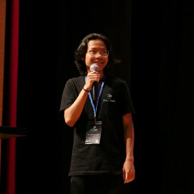

Merhaba, ben Fatih Rahman Hermawan. Bursa Teknik Üniversitesi'nde okuyan ve yapay zekaya büyük bir ilgi duyan bir öğrenciyim. Lise yıllarımdan itibaren yazılımlarla ilgilenmeye başladım ve birçok teknoloji fikir yarışması ve yazılım yarışmasına katıldım. ❤️